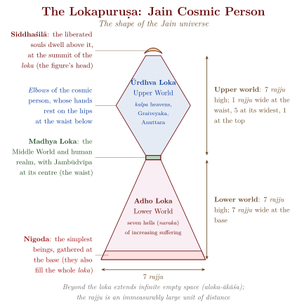

Chapter 11: Jain Cosmology and Ethics¶
11.1 The Jain Universe: Loka and Aloka¶
Jain cosmology is unusually systematic and quantified (Caillat and Kumar 1981; Jaini 1979). Unlike the Buddhist and the Brahmanical (Purāṇic) cosmologies, which describe world-systems that are periodically destroyed and re-formed, it holds that the universe (loka) is eternal, uncreated and indestructible. It exists within an infinite expanse of empty space (aloka-ākāśa), and its structure is described in precise numerical detail.
11.1.1 The Shape of the Universe: Lokapuruṣa¶
The Jain universe is conceived as having the shape of a cosmic person (lokapuruṣa) standing with arms akimbo, hands on hips and elbows out. In the standard diagrams the person is reduced to the outline of the universe itself. The lower world spreads like the legs and skirt of a standing figure; the narrow middle world, where humans live, is its waist; the widest part of the upper world marks the elbows; and the abode of the liberated is at the crown of the head. Manuscript and temple paintings often fill this outline with a human body, sometimes with the continents drawn across the waist; Figure 11.1 gives the outline with the proportions stated in the texts.

11.1.2 The Three Worlds¶
The upper world (ūrdhva loka) contains the heavens, arranged in ascending order of refinement. Lowest are the kalpa heavens — twelve in Śvetāmbara texts and sixteen in Digambara texts, from Saudharma and Īśāna up to Acyuta — whose gods still live in a society of ranks, kings and servants. Above them lie the nine Graiveyaka (“neck”) heavens and the five Anuttara (“unsurpassed”) heavens, whose gods are all equal. At the apex is the crescent-shaped Siddhaśilā, also called Īṣatprāgbhārā, above which, at the very top of the loka, the liberated souls (siddha) dwell in omniscience and bliss. Rebirth even in the highest heaven is still bondage; only the Siddhas have left the cycle.
The middle world (madhya loka) is the most elaborately described region of the Jain cosmos. At its centre lies Jambūdvīpa, the “Island of the Rose-Apple Tree”, a circular continent surrounded by concentric rings of oceans and continents, extending outward in ever-larger circles (Table 11.1).
| Ring | Continent | Ocean | Notes |
|---|---|---|---|
| 1 | Jambūdvīpa | — | Central continent; 1 lakh yojanas in diameter |
| 2 | — | Lavaṇa-samudra | Salt ocean |
| 3 | Dhātakīkhaṇḍa | — | Second continent |
| 4 | — | Kālodadhi | Black-water ocean |
| 5 | Puṣkaradvīpa | — | Third continent (half accessible to humans) |
| \(\vdots\) (continuing outward with innumerable concentric rings) | |||
At the centre of Jambūdvīpa stands Mount Meru (Sumeru), the cosmic axis. Six mountain ranges divide Jambūdvīpa into seven regions (kṣetra), with Bharata-kṣetra, the land of India, in the south. Humans live only in the two and a half innermost continents, and only in some regions of these can Tīrthaṅkaras appear and liberation be attained.
The lower world (adho loka) contains seven hells (naraka), each darker and more painful than the one above (Jaini 1979). Their names describe a progressive dimming of light, from the “gem-lustred” (Ratnaprabhā) through the pebble-, sand-, mud- and smoke-lustred hells (Śarkarā-, Vālukā-, Paṅka- and Dhūmaprabhā) to the hells of darkness (Tamaḥprabhā) and great darkness (Mahātamaḥprabhā). At the base of the universe, and in fact throughout it, are the nigoda, the simplest beings, which share bodies in clusters and from which, in Jain doctrine, souls first emerge into the wider cycle of rebirth.
11.2 Cyclic Time: Utsarpiṇī and Avasarpiṇī¶
Jain cosmology conceives of time as eternal and cyclical. Jain authors call the cycle of cosmic time the kālacakra, “wheel of time” — the same word, in a quite different sense, as the title of the late Buddhist tantra described in Chapter 6. Each turn of the wheel consists of two half-cycles:
- Utsarpiṇī (Ascending Half-Cycle)
- A period of progressive improvement in human virtue, happiness, lifespan, and physical stature. It consists of six aras (spokes or epochs), moving from the worst to the best conditions (Table 11.2).
- Avasarpiṇī (Descending Half-Cycle)
- A period of progressive decline. Currently, according to Jain tradition, we are in the fifth ara of the descending half-cycle — an age of increasing moral and physical decline.
| Ara | Name | Characteristics (Descending Cycle) |
|---|---|---|
| 1 | Suṣama-suṣamā (“very happy”) | Extreme happiness; wish-fulfilling trees (kalpavṛkṣa) provide for all needs |
| 2 | Suṣamā (“happy”) | Great happiness; long lifespan; tall stature |
| 3 | Suṣama-duḥṣamā (“happy-unhappy”) | Happiness mixed with sorrow; at its end Ṛṣabha, the first Tīrthaṅkara, introduces civilisation |
| 4 | Duḥṣama-suṣamā (“unhappy-happy”) | Sorrow mixed with happiness; the other twenty-three Tīrthaṅkaras appear |
| 5 | Duḥṣamā (“unhappy”) | Sorrow predominates; decline (the present age, which began shortly after Mahāvīra’s death) |
| 6 | Duḥṣama-duḥṣamā (“very unhappy”) | Extreme sorrow; collapse of religion and society |
The duration of each complete cycle (ascending + descending) is twenty koṭākoṭi sāgaropamas (\(2 \times 10^{15}\) “ocean-measures”, each itself an unimaginably long period; see Chapter 10). The figure is finite but far beyond any human measure, expressing the practically endless round of rebirth.
11.3 Jain Ethics: A Comprehensive Framework¶
Jain ethics is highly systematic, setting out graded duties for mendicants and for lay people. Grounded in the metaphysical conviction that every living being possesses an eternal soul (jīva) with the potential for infinite knowledge and bliss, Jain ethics extends moral consideration to all sentient beings — and indeed to the entire natural world.
11.3.1 The Ethical Framework for Laypeople¶
While the five great vows bind mendicants, Jain teachers set out a graduated discipline for lay men and women (śrāvaka, śrāvikā). The lists of subsidiary vows vary between texts; a common arrangement has twelve (Jaini 1979; Williams 1963). The five “lesser vows” (aṇuvrata) are limited forms of the mendicant’s vows: the householder renounces intentional harm to mobile beings, lying, stealing, sexual relations outside marriage and the accumulation of possessions beyond a chosen limit. Three “strengthening” vows (guṇavrata) limit the directions and distances of one’s travel (digvrata) and the things one consumes and uses (bhogopabhoga-parimāṇa), and forbid purposeless harm (anarthadaṇḍa-viramaṇa). Four “vows of training” (śikṣāvrata) bring the householder for limited periods close to the mendicant’s life: periods of equanimity meditation (sāmāyika), further temporary limits on movement (deśāvakāśika), fasting and quasi-monastic observance on holy days (proṣadhopavāsa), and giving to mendicants and guests (atithi-saṃvibhāga). The structure is characteristic: the lay life is defined not as a separate ideal but as a partial and progressive approach to renunciation.
11.3.2 Ahiṃsā in Practice: Jain Vegetarianism and Beyond¶
The commitment to non-harming shapes everyday life in visible ways. Jains abstain from meat, fish and eggs, and many also avoid root vegetables such as potatoes, onions and garlic, which are held to harbour innumerable minute beings (they are “infinite-bodied”, anantakāya) and whose harvesting destroys the whole plant; honey, alcohol and certain figs are also avoided. Mendicants and devout lay people strain water before use, and mendicants sweep the ground before them. Many Jains do not eat after sunset, so as not to consume insects drawn to food by light. Non-harming has also shaped occupations: Jain texts forbid trades that involve great harm — butchery, fishing, and dealing in weapons, poisons or animal products — which helps to explain the concentration of Jains in commerce, although Jains have also served historically as ministers and generals.
11.3.3 Jain Environmental Ethics¶
Modern Jains and scholars have drawn out ecological implications from these teachings. The recognition that earth, water, fire, air and plants contain living beings (jīva) means that much of the natural environment is ensouled and deserving of moral consideration. Scholars caution, however, that classical Jain non-harming was aimed at the purification of the individual soul rather than at the protection of ecosystems; “Jain environmentalism” is a modern reinterpretation, though a well-grounded one (Chapple 2002; Cort 2001).
Modern Jain writers have stated these implications as principles: that the elements and plants possess souls and are morally significant; that unnecessary harm to any of them generates karma; and that non-possession (aparigraha) implies restraint in consuming natural resources. The Tattvārthasūtra’s phrase parasparopagraho jīvānām, “souls render service to one another” (5.21), adopted as a motto by the Jain community in 1974, is read today as an ethics of mutual dependence; in its original context it states, more neutrally, that souls affect one another, for good or ill.
11.4 The Six Obligatory Duties (Āvaśyaka)¶
Every Jain monk and nun, and devout laypeople to a lesser degree, are expected to perform six obligatory daily observances (āvaśyaka; Table 11.3).
| No. | Duty | Description |
|---|---|---|
| 1 | Sāmāyika | Equanimity meditation; a period of 48 minutes devoted to contemplative stillness and the cultivation of inner peace |
| 2 | Caturviṃśati-stava | Hymn of praise to the twenty-four Tīrthaṅkaras |
| 3 | Vandana | Reverential salutation to the spiritual teacher (ācārya) |
| 4 | Pratikramaṇa | Confession and repentance for transgressions committed during the day or night |
| 5 | Kāyotsarga | Abandoning the body — standing in motionless meditation, detaching from physical sensations |
| 6 | Pratyākhyāna | Renunciation — taking a vow to abstain from certain foods, activities, or possessions for a specific period |
The Pratikramaṇa is of particular significance. This daily practice of confession and repentance embodies the Jain ideal of moral self-examination. The practitioner reviews all actions of the day, identifies any violations of the vows, and seeks forgiveness from all beings who may have been harmed. A central verse of the pratikramaṇa rite is the khāmemi savva-jīve — “I forgive all living beings; may all living beings forgive me”:
Khāmemi savva-jīve,
savve jīvā khamantu me;
mittī me savva-bhūesu,
veraṃ majjha na keṇai.
I forgive all living beings; may all living beings forgive me. I have friendship with all beings and enmity with none.
— Vandittu Sutta (the lay pratikramaṇa text) 49
11.5 Jain Festivals and Observances¶
The Jain calendar includes several important festivals and observances that reinforce the community’s ethical and spiritual commitments (Table 11.4).
| Festival | Time | Significance |
|---|---|---|
| Paryuṣaṇa Parva | Aug–Sept (8 or 10 days) | The most important Jain festival; fasting, meditation, confession, and mutual forgiveness |
| Mahāvīra Jayantī | Caitra (Mar–Apr) | Birthday of Mahāvīra |
| Dīvālī | Kārttika (Oct–Nov) | Commemorates Mahāvīra’s attainment of nirvāṇa |
| Mahāmastākābhiṣeka | Every 12 years | Grand anointing ceremony of the Bāhubali statue at Śravaṇabeḷagoḷa |
| Saṃvatsarī (Śvetāmbara) / Kṣamāvaṇī (Digambara) | End of Paryuṣaṇa / Daśalakṣaṇa | Universal forgiveness; Jains seek forgiveness from all beings for any harm done |
| Akṣaya Tṛtīyā | Vaiśākha (Apr–May) | Commemorates the first Tīrthaṅkara Ṛṣabhadeva’s breaking of his first fast |
The Paryuṣaṇa Parva (also known as Daśalakṣaṇa Parva among Digambaras) is the principal festival of the Jain calendar. During these eight or ten days, Jains intensify their spiritual practice through fasting, meditation, scripture reading, and acts of charity. The festival culminates in a day of mutual forgiveness (Saṃvatsarī for Śvetāmbaras, Kṣamāvaṇī for Digambaras), when Jains ask forgiveness of all beings and of one another.
11.6 The Jain Theory of Perspectives Applied to Ethics¶
The implications of Anekāntavāda for intellectual humility, tolerance and the avoidance of one-sided views (ekānta) were set out in Chapter 9. Applied to ethics, they add two further ideas: that understanding another’s moral perspective is itself a moral act, calling for patience (kṣānti) and friendliness (maitrī); and that dogmatism, ridicule and contempt for others’ views are a form of verbal and mental violence, and so a breach of ahiṃsā.
This ethical reading of Anekāntavāda is largely the work of modern Jain thinkers and of scholars interested in religious pluralism and inter-cultural dialogue. Classical Jain logicians used the doctrine above all in debate, to show that the rival systems each grasped only part of the truth; the extension to a general ethic of tolerance is a modern development, though one with roots in the tradition (Dundas 2002; Long 2009).
11.7 The Jain Community: Social Organisation¶
The Jain community (saṅgha) consists of four constituent groups: monks (sādhu/muni), nuns (sādhvī/āryikā), laymen (śrāvaka), and laywomen (śrāvikā). This fourfold community (caturvidha-saṅgha) mirrors the Buddhist pariṣad and provides the institutional framework for the preservation and practice of the Jain dharma.
The relationship between the monastic and lay communities is symbiotic: the monastics provide spiritual guidance, teaching, and the living example of renunciation, while the laity provides material support (dāna) in the form of food, clothing, shelter, and medicine. The Jain laity, particularly in the mercantile communities of Gujarat, Rajasthan, Karnataka, and Maharashtra, is known for its philanthropy, endowing temples (Figure 11.2), manuscript libraries, schools, hospitals and animal shelters (Cort 2001; Babb 1996).
| Stage | Name | Description |
|---|---|---|
| 1 | Darśana | Right faith; acceptance of the Jain worldview |
| 2 | Vrata | Observance of the five aṇuvratas (minor vows) |
| 3 | Sāmāyika | Regular practice of equanimity meditation |
| 4 | Proṣadhopavāsa | Fasting on the holy (parvan) days, the 8th and 14th of each lunar fortnight |
| 5 | Sacitta-tyāga | Abstaining from eating raw vegetables and fruits |
| 6 | Rātri-bhojana-tyāga | Abstaining from eating after sunset |
| 7 | Brahmacarya | Sexual abstinence; celibacy |
| 8 | Ārambha-tyāga | Abandoning business and worldly occupations |
| 9 | Parigraha-tyāga | Renouncing possessions and attachments |
| 10 | Anumati-tyāga | Withdrawing consent for family members to act on one’s behalf |
| 11 | Uddiṣṭa-tyāga | Accepting only food that has not been specially prepared for oneself |
The eleven stages (Table 11.5) apply to the householder the same logic as the vows: each adds a further renunciation, until at the eleventh the layman lives almost as a mendicant while not yet taking initiation. In practice few lay people go beyond the first stages, and the scheme serves as much to define the ideal as to describe what people do.
11.8 Sallekhanā: The Voluntary Spiritual Death¶
One of the most distinctive and controversial aspects of Jain ethics is Sallekhanā (also called Santhārā) — the voluntary, religiously sanctioned death by gradual fasting at the end of one’s life. This practice is understood not as suicide (which involves passion and attachment) but as a peaceful, meditative withdrawal from the body, undertaken when death is imminent and further life would serve no spiritual purpose (Dundas 2002; Jaini 1979).
The texts surround the vow with conditions. It may be undertaken only when death is near, through terminal illness, extreme old age or calamity; it requires the permission and guidance of a spiritual teacher; food, then water, and possessions are given up by degrees; and the dying person is to remain in meditation and equanimity, often listening to the recitation of the Namokāra mantra. The memorial inscriptions of Karnataka show that monks, nuns and lay men and women undertook it in the medieval Deccan (Chapter 13).
The practice has been the subject of legal and ethical controversy in modern India. In 2015 the Rajasthan High Court held that santhārā could be prosecuted as attempted suicide; the Supreme Court of India stayed that judgement within weeks, pending further hearing. Jain authorities insist that the vow is a religious discipline undertaken without passion when death is approaching, and is therefore distinct from suicide; critics, including some within the community, worry about social pressure on the elderly.